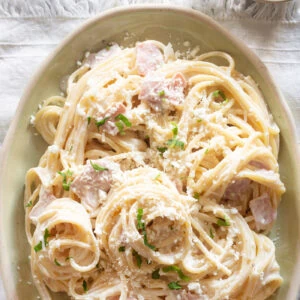

Creamy Ham Spaghetti Recipe
Creamy ham spaghetti is a comforting and flavorful pasta dish.
The combination of Mexican crema, sautéed ham, and seasonings creates
a rich and smooth sauce that perfectly coats every strand of spaghetti.
It’s a simple yet delicious meal ideal for family dinners.

Ingredients
- 14 oz spaghetti
- 1 ½ cups Mexican crema
- 1 cup ham (cut into small pieces)
- 2 tablespoons butter
- 1 tablespoon olive oil
- 2 teaspoons chicken bouillon
- 1 teaspoon garlic powder
- 2 teaspoons onion powder
- Salt (as needed)
- Queso fresco (for topping)
- Chopped parsley (for topping)
Instructions
- Bring a large pot of salted water to a boil and cook the spaghetti according to package instructions.
- While pasta cooks, heat olive oil and butter in a large pan over medium heat.
- Add ham and sauté until slightly browned.
- Add Mexican crema, chicken bouillon, garlic powder, onion powder, and salt to taste.
- Pour in 1 cup of pasta cooking water and mix well.
- Let the sauce simmer for about 3 minutes until slightly thickened.
- Drain the pasta and add it to the pan. Toss until fully coated with sauce.
- Serve topped with crumbled queso fresco and chopped parsley.